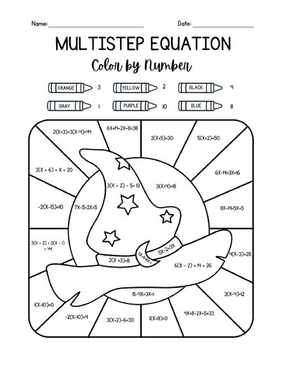
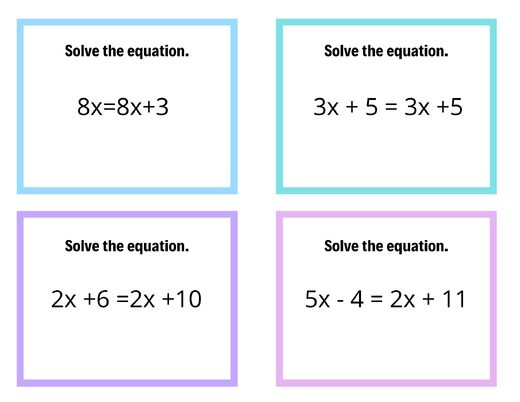
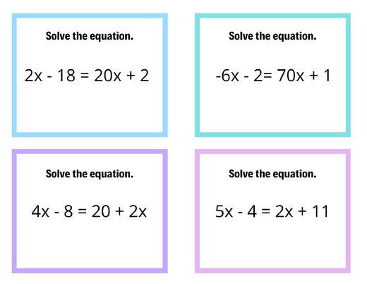

Multistep Equations Color-by-Number
B3_10-29_30LessonPlan.docx
Also in: Block 3 Math/Week 9/Lesson Plans
PA Standards
- CC.2.2.HS.D.9: Use reasoning to solve equations and justify the solution method.
- CC.2.2.8.B.3: Analyze and solve linear equations.
Essential Questions
- How do inverse operations help me undo the steps in an equation to find the value of the variable?
- Why does the order of my steps matter when I solve a multistep equation?
- How can I check that my solution is correct?
Objectives
- Students will be able to:
- Solve multistep equations by identifying and carrying out each step in the correct order using inverse operations.
- Explain or identify the next step in solving an equation.
- Check their answers and use correct solutions to complete the multistep equation color-by-number accurately.
Assessment
- Formative: Whiteboard responses during the warm-up: every student solves along with each step so I can see understanding at a glance.
- Formative: Questioning and observation in small groups (my notes and my cooperating teacher’s notes).
- Independent practice: Multistep equation color-by-number: correct colors show whether each answer is right.
- Practice data: IXL recommendations for students who finish early.
- Closing check: Halloween Gimkit as a fun, low-pressure check of the skill.
Differentiation
- Small groups: Students are grouped by readiness so each group moves at the same pace.
- Supports: Visual schedule and a materials list are posted on the board.
- Supports: Each step is modeled aloud and students may use calculators.
- Supports: Students respond on whiteboards, which allows low-pressure practice and easy error correction.
- Choice: Students may choose their own seat as long as they are working.
- IEP/504: Accommodations in each student’s IEP/504 plan will be followed (for example, extra time or chunked directions).
- Extension: Early finishers move on to their IXL recommendations.
Classroom Environment & Routines
- A visual schedule and a list of materials to grab are on the board when students enter, so routines are clear before class begins.
- Students gather whiteboards, markers, erasers, and calculators during the first 5 minutes to settle in.
- Students answer on whiteboards during the warm-up, and I invite volunteers to share the next step.
- Small groups are split by readiness, with one group working with me and the other with my cooperating teacher.
- After lunch, students choose their own seats as long as they are working. I circulate to help.
- Early finishers work on their IXL recommendations or on unfinished work.
- The class ends with a Halloween Gimkit celebration.
Activating Prior Knowledge
The warm-up reviews the steps for solving multistep equations that students already know. Students answer on whiteboards and are invited to say the next step, so they stay actively involved. Working in small groups at the same pace lets each student build confidence. The color-by-number and the Halloween Gimkit make the practice fun and motivating.
Materials Needed
Whiteboards, dry-erase markers, erasers, calculators, visual schedule and materials list (on the board), 4 warm-up multistep equations, multistep equation color-by-number, coloring supplies, pencils, student devices for IXL and Gimkit, Halloween Gimkit
Vocabulary
Equation; variable; constant; coefficient; inverse operation; isolate; solution; check
Lesson Sequence
- Arrival and Setup — 5 minutes
- Students read the visual schedule and materials list on the board.
- Students grab whiteboards, markers, erasers, and calculators and settle in.
- Whole-Class Warm-Up — 10 minutes
- We solve 4 multistep equations together on the board.
- I go through each step aloud and give students a chance to tell me the next step or the answer.
- Students follow along on their whiteboards so I can see who understands and who needs support.
- Small Group Instruction — 30 minutes
- The class splits into 2 small groups by readiness, so students in each group work at a similar pace.
- One group works with me and the other works with my cooperating teacher.
- Students practice multistep equations, explaining steps and checking their work with teacher support.
- Lunch
- Independent Practice: Color-by-Number — after lunch
- I hand out the multistep equation color-by-number.
- Students work individually and may choose their own seat as long as they are working.
- I circulate to help and check understanding.
- When finished, students work on IXL recommendations or any unfinished work.
- Halloween Gimkit — end of class
- The class plays a fun Halloween Gimkit as a small celebration.
Closure
- The class ends with a Halloween Gimkit that gives students one more chance to use their multistep equation skills while celebrating together. As students play, I can see which skills they know well and which need more practice.
- Connection to Next Lesson: Teacher connects the lesson to continued practice solving multistep equations and checking solutions.
Show the original document here
Materials from the same week


